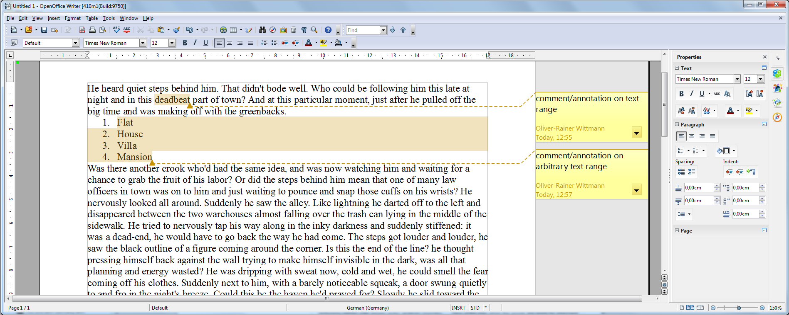
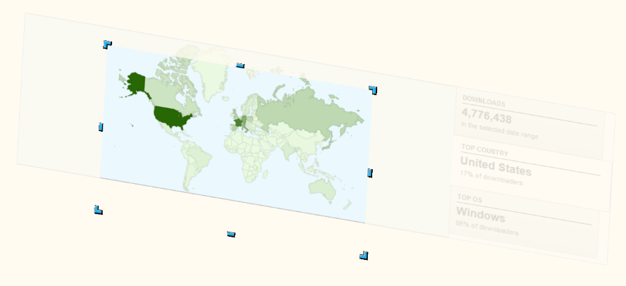
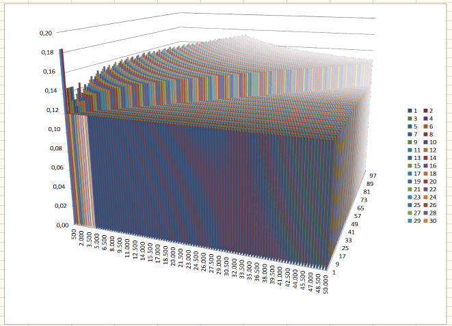
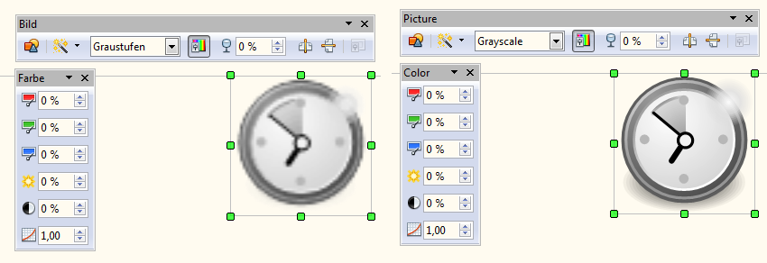

Available translations of this document: Chinese - Dutch - German - Hebrew - Italian - Russian - Spanish
- General Remarks
- New Features
- Improvements/Enhancements
- In-place editing of Input Fields
- Interactive Crop Feature
- Import Picture from File and Drag & Drop of Graphic Data
- Load/Import of 3D Charts improved
- Improved Graphic Modifications/Filters for Vector Graphics
- Keep original Graphic Data when ever possible
- Clipboard enhancements for Graphic Content
- Other Improvements/Enhancements
- Removed/Retired Features
- Bug Fixes
- Additional Language Support
- Known Issues
- Stay informed about Apache OpenOffice
General Remarks
Apache OpenOffice 4.1.0 is a minor feature release. All users of Apache OpenOffice 4.0.1 or earlier are advised to upgrade. You can download Apache OpenOffice 4.1.0 here.
Please review these Release Notes to learn what is new in this version as well as important remarks concerning known issues and their workarounds.
Along with the new features described later in these Release Notes, our Bugzilla issue tracking database provides a detailed list of resolved issues.
Other general areas of improvement include: Improvements to interoperability, feature enhancements, bug fixes and new and updated translations.
Note: Mac users should be aware that with this release Apache OpenOffice is a 64-bit application and requires Mac OSX 10.7 or above.
Please see the System Requirements for Apache OpenOffice 4.1.
New Features
Comments/Annotations on text ranges
In Writer comments/annotations are now possible on text ranges instead of only at text positions.
This feature was introduced in the Open Document Format (ODF) in version 1.2 and improves, among other things, the interoperability with the OOXML file format, but until now had not been implemented in OpenOffice. The OSBA OOXML improvement project included the implementation of this feature. This feature is an improved version of the code written by SUSE for this OSBA project, where the patches made available to us under the Apache License 2.0.

Details on the feature:
- Comment/annotation on a text range inside a paragraph (part of OSBA project)
- Comment/annotation on arbitrary text ranges
- Comments/annotations on overlapping text ranges
- Highlight of commented/annotated text range (part of OSBA project plus needed improvements)
- ODF import/export
- Basic import/export functionality (part of OSBA project plus needed fixes)
- Support for author initials (part of OSBA project plus needed ODF conformance fix)
- OOXML import
- Basic import functionality (part of OSBA project)
- Import of author initials (part of OSBA project plus needed fix)
- Import of author and creation date
Support for iAccessible2
OpenOffice 4.1 Windows version integrates IAccessible2 support and drops the legacy Java access bridge, offering better integration with top screen readers such as JAWS and NVDA. This feature will activate automatically when MSAA/IA2 compatible screen reader is running. Numerous accessibility enhancements and bug fixes are delivered in Writer, Impress, and Calc. OpenOffice 4.1 brings a much better user experience for Windows users with visual impairments than previous versions.
Improvements/Enhancements
In-place editing of Input Fields
In Writer the user experience for editing Input Fields has been improved.
The user can now modify the content of an Input Field directly in the document's text area - no additional dialog is needed. When traveling with the cursor into an Input Field the users gets feedback about Entering and Leaving the Input Field. A bounding rectangle is drawn around the Input Field when the cursor is inside the Input Field - see following illustration.

When the cursor is inside an Input Field the user can navigate to the next or the previous Input Field using the TAB-key respectively the SHIFT-TAB-Key - similar to the navigation from one cell to another cell inside a table. To insert a TAB-character into an Input Field CTRL-TAB-key has to be used.
In read-only text documents the user can still edit the existing Input Fields and navigate from one Input Field to the other. Also the field shadings are visible for Input Fields in read-only text documents.
Input Fields can only contain text without formatting. Accordingly, the corresponding edit and insert actions for Input Fields are restricted and character formattings are applied to the complete Input Field. This means no change compared to former OpenOffice versions.
Further details on this user experience improvement are given in the project's wiki - see In-place editing of Input Fields
Interactive Crop Feature
The Interactive Crop feature for selected Graphic Objects in Draw/Impress allows intuitive cropping of Graphic Object content. However, it previously only worked flawlessly when the object was not transformed, except being translated and scaled. For AOO 4.0 a preview of the crop was already added. For AOO 4.1 the interactive cropping will now work in combination with all possible Graphic Object transformations. If your Graphic Object is rotated, sheared, mirrored in X and/or Y, it can now be interactively cropped flawlessly. Also the cropped result will be correct now in all combinations of transformations and all possible graphic contents (pixel graphics, metafiles, SVG, ...) in all exports (Print, PDF Export, ...).

The example shows a rotated and sheared Graphic Object that gets interactively cropped to show only a part of the world map.
Import Picture from File and Drag & Drop of Graphic Data
Importing Picture/Graphic Data from File and Drag & Drop of that data has been enhanced and unified for all situations and all Applications of AOO 4.1. The main goal was to make the re-use of existing documents or copy/paste of single pages easier by allowing simpler replacement of the content of existing Graphic Objects. You can now, for example, copy/paste Slides and easily replace the graphic content of Graphic Objects without changing their Position or Orientation. This is also possible for Writer Graphic Objects, so e.g., copy/paste Pages in Writer containing Graphic Objects or copying Pages from another Document and then replace the Pictures.
The following actions work the same in all AOO 4.1 Applications:
For using the Import Picture from File Dialog:
- If no Graphic Object is selected, a new one will be inserted at Cursor position (as usual)
- If a Graphic Object is selected, its content will be replaced without changing the Position or Orientation
- If a Draw Object is selected, the new Graphic content will be used as Graphic FillStyle for that Object
- Selecting the 'Link' feature in the Dialog will create a linked Graphic Object in the first two cases
For Drag & Drop:
- If there is no Graphic Object at the drop position, a new one will be inserted there (as usual)
- If there is a Graphic Object at the drop position, its content will be replaced without changing the Position or Orientation
- If there is a Draw Object at the drop position, the new Graphic content will be used as Graphic FillStyle for that Object
- Pressing CTRL+SHIFT will create a linked Graphic Object in the first two cases
This was an enhancement request to make re-usage of existing Graphic Objects easier - the problem was that the user had to insert a new Graphic Object, note the Position and Size of the old one and apply this to the new one to cleanly replace the old Graphic Object. Thanks for requesting that enhancement in AOO Bugzilla!
Load/Import of 3D Charts improved
There was a performance problem when Documents with big 3D charts were Loaded (own Formats) or Imported (external Formats). That issue was located in the creation of a huge amount of 3D Objects for Chart visualization. This has been improved. For example; an example document (External with a huge Chart containing 100x100x5 vertical 3D Data Boxes) could not be imported at all. It can now be loaded in seconds and looks like this:

This improvement allows to work with much bigger 3D Charts in AOO 4.1.
Improved Graphic Modifications/Filters for Vector Graphics
When applying Modifications and/or Filters to Graphic Objects the change was often applied by internally changing the Vector Graphic (SVG or Metafile) to a Pixel-Based variant. This makes the advantages of Vector Graphics vanish and often results in bad output quality for Print and PDF export. Also the handling of Graphic Objects varied between Writer and other AOO Applications in this aspect. This has been internally unified so that all usages of Vector Data in Graphic Objects are equally improved for this aspect and in the future.
It is not possible to enhance all modifications AOO offers to GraphicObjects to Vector Graphics in this way, but many were improved. Vector Graphics will stay enhanced when applying the following modifications:
- Gray scale
- Black/White
- Watermark
- Transparency (additional, 0% to 100%)
- Red/Green/Blue modification (-100% to 100%)
- Brightness (-100% to 100%)
- Contrast (-100% to 100%)
- Gamma Correction (0.10 to 10)
This also works for all combinations of the above modifications. This enhancement is already visible in the Edit Views, but its main goal is to increase Print and PDF export quality (and other exports that can keep Vector Data) when working with Vector Graphic content accordingly. Here is an example from the Edit Views (Left: AOO 4.0.1, Right: AOO 4.1). It's the same SVG graphic modified to Grayscale:

Keep original Graphic Data when ever possible
Previous versions of AOO eventually modified the type of inserted Graphic Data, for example inserted JPEG files were in some scenarios saved as PNG in the created ODF files. These scenarios were different for the different AOO Applications since it was not handled the same internally. This has been improved so that AOO 4.1 handles this equal in all Applications and tries to always keep your inserted original Graphic Data when possible. This gives advantages for the file size of the created ODF Files, but also for the Image quality. There were scenarios in which JPEG files were recoded to JPEG which will in no case improve the image quality but has the potential to lower it.
This works for BMP, JPEG, PNG and GIF for pixel-oriented graphics. It is also in place for Vector-based Graphics like SVG and Metafiles.
Clipboard enhancements for Graphic Content
The Clipboard support for exchange of PNG is further improved, so that Pixel-based Graphic modification cycles (e.g. copying graphic content to an external Application, modifying it and copying it back to AOO 4.1) will work better with more external Image Editors of your choice. Broader support for PNG means that transparency in Pixel-based graphics will be preserved in more places. Did you know that you can copy any Graphic Object from AOO 4.1 to the clipboard and paste it to any external Image editor of your choice to modify them and copy them back?
Other Improvements/Enhancements
Seamonkey replaced by NSS ("Network Security Services")
Outdated code from Mozilla that was used to include cryptography services and address book access has been replaced with the more modern and more secure NSS libraries. This greatly simplifies the build process and source code maintenance and is transparent to end users in general. Addendum (2015-09-30): Please see information on Certificate Detection so that using digital signatures works correctly for you.
End users are affected only in the following ways:
- Under Windows XP, adding the Windows Address Book as an OpenOffice database is no longer supported; this has always been the case on any newer Windows versions (Windows Vista, Windows 7 and Windows 8).
- Thunderbird users will not see direct Thunderbird address book support in OpenOffice's address book wizard, but the OpenOffice support for CSV can replace it for now. Users can use Thunderbird's Tools->Export->AsCsv functionality to get their address book as comma separated text.
- Authenticated LDAP access is now unsupported (the non-authenticated access was already unsupported).
Removed/Retired Features
- Support for Macintosh OSX 10.6.x and below has been dropped. OpenOffice now requires Mac OS X 10.7 (Lion) or higher. Please see the System Requirements.
Bug Fixes
Additional Language Support
New translations available in Apache OpenOffice 4.1 include:
Bulgarian (bg) | Danish (da) | Hebrew (he) |
Hindi (hi) | Norwegian Bokmal (nb) | Thai (th) |
Updated translations available in Apache OpenOffice 4.1 include:
Basque (eu) | Dutch (nl) | German (de) |
| Lithuanian (lt) | Portuguese (pt) | Serbian (sr) |
| Spanish (es) | Turkish (tr) |
For a complete list of available languages and language packs see:
http://www.openoffice.org/download/other.html
New and Updated Dictionaries
New Dictionaries
| Lithuanian (lt) | Portuguese (pt-PT) |
Updated Dictionaries
| English (en) see note | German (de) | Gaelic (gd) |
Note: The extension contains multiple variants. Only the en-GB dictionary has been updated.
Known Issues
- Apache OpenOffice 4.1.0 will be flagged by the new Gatekeeper facility in Mac OS X Mountain Lion and Maverick. This is a new feature to help guard against malware on Mac systems. There is a procedure laid out at the following link to allow applications not installed from the Mac App store to run. See the article at Mac support at http://support.apple.com/kb/HT5290.
- Apache OpenOffice 4.1.0 supports Java 7, which is the recommended configuration; but (especially on 64-bit Windows) you might receive warnings about the Java version being defective. In that case, download and install the Microsoft Visual C++ 2010 Redistributable Package. If you still have problems, install the most current JRE 6 version. Make sure you get the file "Windows x86 Offline (32-bit)". Then configure OpenOffice to use is at "Tools - Options - OpenOffice - Java". See this forum topic for more information.
- Dictionaries for Spell Check are temporarily only included in complete localized Installers and not in Language packs (Issue 124423). They can be installed as extensions using Tools->Extension Manager.
- For the MacOSX version only, any extensions that are written in C++ will no longer work and be marked as disabled in the AOO extensions manager. This is because of the change of AOO from a 32-bit to a 64-bit application on MacOSX. Please report the problem to the developer of the extension.
- For MacOSX Version only: Currently there is no support for AudioVisual in version 4.1.0. Symptoms include: you can't play audio/video embedded in existing documents; you can't insert audio/video objects in documents. For technical details see bug 124800 in bugzilla.
Stay informed about Apache OpenOffice
You are encouraged to subscribe to the Apache OpenOffice announcement mailing list to receive important notifications such as product updates and security patches. To subscribe you can send an email to: announce-subscribe@openoffice.apache.org.
You can also follow the project on Twitter, Facebook and Google+.
{kind=link}
{kind=link}
{kind=link}
{kind=link}
{kind=link}
{kind=link}